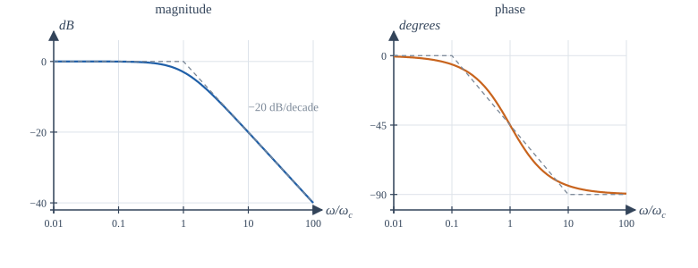
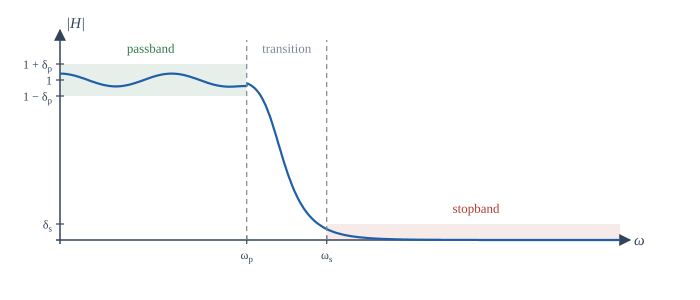
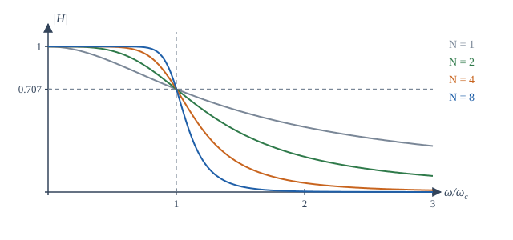
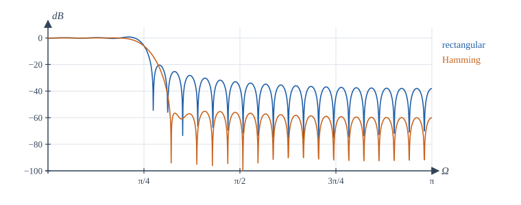

Chapter 12: Frequency Response and Filters¶
Bode plots, filter specifications, Butterworth designs, and digital IIR and FIR filters
Learning outcomes
After this chapter you should be able to:
- interpret magnitude and phase responses, decibels, group delay and the condition for distortionless transmission;
- sketch Bode plots of first- and second-order factors and combine them;
- write a filter specification in terms of passband, stopband, transition band and tolerances;
- find the order of a Butterworth filter that meets a specification;
- design a digital IIR filter by the bilinear transform with prewarping, and a notch filter by placing poles and zeros;
- design a linear-phase FIR filter by the window method and choose a window;
- compare FIR and IIR filters for a given task.
12.1 What the frequency response tells us¶
A stable LTI system multiplies the complex exponential \(e^{j\omega t}\) by \(H(j\omega)\), and so, for a real system, it turns the sinusoid \(A\cos(\omega t + \phi)\) into
The magnitude response \(|H(j\omega)|\) is the gain at each frequency; the phase response \(\angle H(j\omega)\) is the phase shift. (For DT systems replace \(H(j\omega)\) by \(H(e^{j\Omega})\).) Shaping the magnitude response is called filtering: passing some frequencies and suppressing others.
Decibels¶
Gains are usually quoted in decibels: \(|H|_{\text{dB}} = 20\log_{10}|H|\). The logarithm turns products into sums, so the gain of a cascade in dB is the sum of the gains. Some values are worth knowing by heart:
| \(\lvert H\rvert\) | 10 | 2 | \(\sqrt2\) | 1 | \(1/\sqrt2\) | \(1/2\) | \(0.1\) | \(0.01\) | \(0.001\) |
|---|---|---|---|---|---|---|---|---|---|
| dB | 20 | 6.0 | 3.0 | 0 | \(-3.0\) | \(-6.0\) | \(-20\) | \(-40\) | \(-60\) |
Table 12.1. Gains in decibels.
The frequency at which the gain falls to \(1/\sqrt2\) of its passband value is the 3 dB or half-power frequency, because the power, proportional to \(|H|^2\), has halved.
Phase, delay and distortion¶
A system transmits without distortion if its output is a scaled, delayed copy of the input, \(y(t) = Kx(t - t_0)\). Taking transforms, \(H(j\omega) = Ke^{-j\omega t_0}\): constant magnitude and linear phase. Within the band occupied by a signal, a filter must therefore have flat magnitude and a phase that is a straight line through the origin if the waveform is to be preserved. The slope of the phase measures the delay; for a general system we define the group delay
the delay experienced by a narrow band of frequencies around \(\omega\). A linear-phase system has constant group delay; a system whose group delay varies across the band smears the waveform, an effect called phase distortion. The ear is fairly tolerant of phase distortion; data transmission and image processing are not.
12.2 Bode plots¶
A Bode plot draws \(|H(j\omega)|\) in dB and \(\angle H(j\omega)\) in degrees against a logarithmic frequency axis. The logarithmic axes turn the factors of a rational transfer function into straight-line pieces that simply add.
A first-order low-pass factor¶
Take \(H(j\omega) = \dfrac{1}{1 + j\omega/\omega_c}\). Then
- For \(\omega \ll \omega_c\): \(|H| \approx 1\), so 0 dB, and the phase is about \(0°\).
- For \(\omega \gg \omega_c\): \(|H| \approx \omega_c/\omega\), so \(|H|_{\text{dB}} \approx -20\log_{10}(\omega/\omega_c)\): a straight line falling at 20 dB per decade (a decade is a factor of 10 in frequency), and the phase approaches \(-90°\).
- At the corner frequency \(\omega = \omega_c\): \(|H| = 1/\sqrt2\) (\(-3\) dB) and the phase is \(-45°\).
The two straight-line asymptotes meeting at \(\omega_c\) approximate the magnitude within 3 dB everywhere. The phase is approximated by a line from \(0°\) at \(0.1\omega_c\) to \(-90°\) at \(10\omega_c\).

A zero factor \(1 + j\omega/\omega_z\) gives the mirror image: \(+20\) dB per decade and \(+90°\) of phase. A pole at the origin, \(1/(j\omega)\), gives a line falling at 20 dB per decade through 0 dB at \(\omega = 1\), with a constant phase of \(-90°\). A constant gain \(K\) shifts the magnitude by \(20\log_{10}|K|\).
Second-order factors¶
The factor \(\dfrac{\omega_n^2}{(j\omega)^2 + 2\zeta\omega_n(j\omega) + \omega_n^2}\) of Section 10.7 has asymptotes at 0 dB below \(\omega_n\) and \(-40\) dB per decade above it, with the phase going from \(0°\) to \(-180°\). Near \(\omega_n\) the true curve depends on \(\zeta\): at \(\omega = \omega_n\) the magnitude is \(\frac{1}{2\zeta}\). For \(\zeta < 1/\sqrt2\) there is a resonant peak of height \(\frac{1}{2\zeta\sqrt{1 - \zeta^2}}\) near \(\omega_n\); for \(\zeta = 0.1\) it is about 5, or 14 dB. Lightly damped poles mean a sharp resonance, the frequency-domain image of the ringing step response.
Example 12.1 A Bode sketch
Sketch the magnitude of \(H(s) = \dfrac{100(s + 10)}{(s + 1)(s + 100)}\).
Write it in Bode form: \(H(j\omega) = \dfrac{100\cdot10\,(1 + j\omega/10)}{1\cdot100\,(1 + j\omega)(1 + j\omega/100)} = \dfrac{10(1 + j\omega/10)}{(1 + j\omega)(1 + j\omega/100)}\).
The DC gain is 10, or 20 dB. Reading the corners in order: at \(\omega = 1\) a pole starts a slope of \(-20\) dB/decade; at \(\omega = 10\) the zero cancels it, so the magnitude is flat again, at \(20 - 20 = 0\) dB; at \(\omega = 100\) the second pole resumes the fall at \(-20\) dB/decade. So the gain is 20 dB up to 1 rad/s, falls to 0 dB at 10 rad/s, stays near 0 dB to 100 rad/s, and then falls. (Exact value at \(\omega = 30\): \(|H| = \frac{10\sqrt{1 + 9}}{\sqrt{1 + 900}\sqrt{1 + 0.09}} = 1.01\), about 0 dB, as the sketch says.)
12.3 Filter types and specifications¶
The ideal filters of Chapters 6 and 7 pass a band of frequencies with gain 1 and reject everything else completely:
- low-pass: passes \(|\omega| < \omega_c\);
- high-pass: passes \(|\omega| > \omega_c\);
- band-pass: passes \(\omega_1 < |\omega| < \omega_2\);
- band-stop (or notch, when narrow): rejects \(\omega_1 < |\omega| < \omega_2\).
They cannot be built: their impulse responses are non-causal and infinitely long (Example 6.5). A practical design therefore starts from a specification with tolerances (Figure 12.2):
- a passband \(0 \le \omega \le \omega_p\) in which the gain stays within \(1 \pm \delta_p\) (or a ripple of so many dB);
- a stopband \(\omega \ge \omega_s\) in which the gain stays below \(\delta_s\) (an attenuation of \(-20\log_{10}\delta_s\) dB);
- a transition band \(\omega_p < \omega < \omega_s\) in which anything is allowed.

The tighter the tolerances and the narrower the transition band, the higher the order of filter required, and the more it costs in components or computation. Filter design is the art of meeting the specification with the lowest order.
12.4 Analog Butterworth filters¶
The Butterworth low-pass filter of order \(N\) has
Its magnitude is \(1\) at \(\omega = 0\), exactly \(1/\sqrt2\) (\(-3\) dB) at \(\omega = \omega_c\) for every \(N\), and falls at \(20N\) dB per decade far above \(\omega_c\). The first \(2N - 1\) derivatives of \(|H|^2\) are zero at \(\omega = 0\), so the passband is as flat as possible: it is called maximally flat. Higher order gives a sharper edge (Figure 12.3).

The poles of \(H(s)H(-s) = 1/(1 + (s/j\omega_c)^{2N})\) lie equally spaced on a circle of radius \(\omega_c\); the causal, stable filter takes the \(N\) of them in the left half-plane. For \(N = 2\) these are \(\omega_c e^{\pm j3\pi/4}\), giving \(H(s) = \dfrac{\omega_c^2}{s^2 + \sqrt2\,\omega_cs + \omega_c^2}\), a second-order system with \(\zeta = 1/\sqrt2\).
Choosing the order¶
With the cut-off \(\omega_c\) at the passband edge (3 dB passband loss), the attenuation at the stopband edge \(\omega_s\) must be at least \(A_s\) dB:
Example 12.2 Order of a Butterworth filter
A low-pass filter must be 3 dB down at 1 kHz and at least 40 dB down at 3 kHz. Then \(N \ge \dfrac{\log_{10}(10^4 - 1)}{2\log_{10}3} = \dfrac{4.000}{0.954} = 4.19\), so \(N = 5\).
Other classical families trade flatness for steepness. Chebyshev filters allow ripple in the passband (type I) or stopband (type II) and achieve a sharper transition for the same order; elliptic filters allow ripple in both and are sharper still; Bessel filters give up sharpness to obtain a nearly linear phase. All are available in libraries such as scipy.signal.
12.5 Digital IIR filters¶
An IIR filter is a recursive difference equation whose system function has poles away from the origin. There are two common ways to design one.
The bilinear transform¶
Start from a good analog design and convert it. The bilinear transform replaces \(s\) by
It maps the left half of the s-plane exactly onto the inside of the unit circle, so a stable analog filter always gives a stable digital filter, and it maps the whole \(j\omega\) axis once around the unit circle, so there is no aliasing. The price is a nonlinear compression of frequency, called warping: the analog frequency \(\omega\) and the digital frequency \(\Omega\) are related by
To place a critical frequency correctly, prewarp it: design the analog prototype with cut-off \(\omega_a = \frac{2}{T}\tan(\Omega_c/2)\), then transform.
Example 12.3 A first-order digital low-pass filter
Design a first-order low-pass filter with a 3 dB cut-off of 1 kHz for a sampling rate of 8 kHz.
\(\Omega_c = 2\pi\cdot1000/8000 = \pi/4\). Prewarp: \(\omega_a = \frac{2}{T}\tan(\pi/8)\). The analog prototype is \(H(s) = \frac{\omega_a}{s + \omega_a}\). Substituting \(s = \frac{2}{T}\frac{1 - z^{-1}}{1 + z^{-1}}\) and writing \(c = \omega_aT/2 = \tan(\pi/8) = 0.41421\):
The difference equation is \(y[n] = 0.41421\,y[n-1] + 0.29289\,(x[n] + x[n-1])\). Its gain is 1 at DC, \(1/\sqrt2\) at exactly 1 kHz (thanks to prewarping), and 0 at 4 kHz (the zero at \(z = -1\)), as the program in Section 12.8 confirms.
Placing poles and zeros directly¶
Simple filters can be designed straight from the geometric picture of Section 11.7. A notch filter that removes one frequency \(\Omega_0\) puts zeros on the unit circle at \(e^{\pm j\Omega_0}\) and poles just inside, at \(re^{\pm j\Omega_0}\) with \(r\) slightly less than 1:
Away from \(\Omega_0\), each pole is almost as far from the point \(e^{j\Omega}\) as its neighbouring zero, so the gain is close to 1; at \(\Omega_0\) the zero makes it exactly 0. The width of the notch is roughly \(2(1 - r)\) rad/sample: the closer the poles to the circle, the narrower the notch.
Example 12.4 Removing mains hum
For 50 Hz hum in audio sampled at 8 kHz (Example 9.3), \(\Omega_0 = \pi/80\). With \(r = 0.99\) the notch width is about \(0.02\) rad/sample, or \(0.02 \times 8000/(2\pi) \approx 25\) Hz. The program in Section 12.8 measures a 3 dB band from 37 Hz to 63 Hz.
12.6 Digital FIR filters and the window method¶
An FIR filter \(y[n] = \sum_{k=0}^{M}h[k]\,x[n-k]\) has a finite impulse response of \(M + 1\) taps. FIR filters are always stable, and they can have exactly linear phase: if the coefficients are symmetric, \(h[k] = h[M - k]\), the frequency response is \(H(e^{j\Omega}) = A(\Omega)e^{-j\Omega M/2}\) with \(A\) real, a pure delay of \(M/2\) samples times a real gain. This is impossible for a causal IIR filter, and it is the main reason FIR filters are used in audio, communications and image processing.
The window method¶
-
Start from the ideal frequency response, for a low-pass filter \(H_d = 1\) for \(|\Omega| < \Omega_c\), with linear phase \(e^{-j\Omega M/2}\). Its impulse response is the shifted sinc
\[ h_d[n] = \frac{\sin\!\big(\Omega_c(n - M/2)\big)}{\pi(n - M/2)} , \]which is infinitely long.
-
Keep only \(n = 0, \ldots, M\) and multiply by a window \(w[n]\): \(h[n] = h_d[n]\,w[n]\).
Truncation with the plain rectangular window gives the Gibbs phenomenon of Section 5.5: ripples near the band edge, with a first stopband side lobe only about 21 dB down, whatever the length. A tapered window trades a wider transition band for much smaller ripples. Table 12.2 lists the common windows; the attenuation is a property of the window shape, while the transition width shrinks in proportion to \(1/M\).
| Window | \(w[n]\), \(0 \le n \le M\) | Peak side lobe of window | Approx. stopband attenuation of filter |
|---|---|---|---|
| Rectangular | \(1\) | \(-13\) dB | 21 dB |
| Hann | \(0.5 - 0.5\cos(2\pi n/M)\) | \(-31\) dB | 44 dB |
| Hamming | \(0.54 - 0.46\cos(2\pi n/M)\) | \(-41\) dB | 53 dB |
| Blackman | \(0.42 - 0.5\cos(2\pi n/M) + 0.08\cos(4\pi n/M)\) | \(-57\) dB | 74 dB |
Table 12.2. Windows for FIR design (approximate values from standard tables).

More refined methods (frequency sampling, and the optimal equiripple design of Parks and McClellan) give lower orders for the same specification; libraries provide them, but the window method remains the clearest introduction and is often good enough.
12.7 FIR or IIR?¶
| FIR | IIR | |
|---|---|---|
| Stability | always stable | must check that poles are inside the unit circle |
| Phase | exactly linear possible | nonlinear (approximately linear only near DC, or with extra stages) |
| Order for a sharp edge | high (tens to hundreds of taps) | low (a few poles) |
| Computation per sample | more | less |
| Sensitivity to coefficient rounding | low | can be high for poles near the circle |
| Design | windows, equiripple; direct in DT | from analog prototypes (bilinear transform), pole placement |
Table 12.3. FIR and IIR filters compared.
Choose FIR when phase linearity or guaranteed stability matters, or when the filter must adapt; choose IIR when computation is scarce and phase does not matter, or when an analog design is to be copied.
12.8 Designing filters in NumPy¶
The program below computes a Butterworth order, designs the IIR filter of Example 12.3 and checks its gain at four frequencies, designs 51-tap FIR filters with two windows and measures their stopband levels, and measures the width of the notch of Example 12.4. The helper freqz evaluates \(H(e^{j\Omega})\) from the coefficients in powers of \(z^{-1}\).
import numpy as np
def freqz(b, a, W):
"""H(e^{jW}) for H(z) = B(z^-1) / A(z^-1)."""
zinv = np.exp(-1j * np.asarray(W))
return np.polyval(b[::-1], zinv) / np.polyval(a[::-1], zinv)
# 1. Butterworth order: at most 3 dB loss at 1 kHz, at least 40 dB attenuation at 3 kHz
N = np.log10(10 ** (40 / 10) - 1) / (2 * np.log10(3000 / 1000))
print(f"Butterworth order needed: {N:.2f} -> N = {int(np.ceil(N))}")
# 2. Bilinear transform of H(s) = wa / (s + wa), cut-off 1 kHz at fs = 8 kHz (with prewarping)
fs, fc = 8000, 1000
c = np.tan(np.pi * fc / fs) # = wa / (2 fs) after prewarping
b = np.array([c, c]) / (1 + c)
a = np.array([1, -(1 - c) / (1 + c)])
print("IIR b =", np.round(b, 5), " a =", np.round(a, 5))
for f in (0, 1000, 2000, 3000):
H = freqz(b, a, 2 * np.pi * f / fs)
print(f" {f:4d} Hz: |H| = {abs(H):.4f} ({20 * np.log10(abs(H)):7.2f} dB)")
# 3. Windowed-sinc FIR low-pass: cut-off pi/4, 51 taps, rectangular versus Hamming window
M = 50 # order; 51 taps, symmetric about n = 25
n = np.arange(M + 1)
Wc = np.pi / 4
hd = Wc / np.pi * np.sinc(Wc / np.pi * (n - M / 2)) # sin(Wc m)/(pi m), m = n - M/2
W = np.linspace(0, np.pi, 4001)
for name, w in (("rectangular", np.ones(M + 1)), ("Hamming", np.hamming(M + 1))):
h = hd * w
H = np.abs(freqz(h, np.array([1.0]), W))
stop = W >= Wc + 0.15 * np.pi # stopband from 0.4 pi
print(f" {name:11s}: DC gain {H[0]:.4f}, worst stopband level {20 * np.log10(H[stop].max()):6.1f} dB,"
f" symmetric (linear phase): {np.allclose(h, h[::-1])}")
# 4. Notch at 50 Hz for fs = 8 kHz: zeros on the circle, poles at radius 0.99
W0 = 2 * np.pi * 50 / 8000
bn = np.array([1, -2 * np.cos(W0), 1])
an = np.array([1, -2 * 0.99 * np.cos(W0), 0.99 ** 2])
f = np.linspace(0, 200, 20001)
Hn = np.abs(freqz(bn, an, 2 * np.pi * f / 8000))
band = f[Hn < 1 / np.sqrt(2)]
print(f"notch: |H| at 50 Hz = {Hn[np.argmin(abs(f - 50))]:.1e}, at 0 Hz = {Hn[0]:.3f},"
f" -3 dB band {band.min():.1f} to {band.max():.1f} Hz")
Butterworth order needed: 4.19 -> N = 5
IIR b = [0.29289 0.29289] a = [ 1. -0.41421]
0 Hz: |H| = 1.0000 ( 0.00 dB)
1000 Hz: |H| = 0.7071 ( -3.01 dB)
2000 Hz: |H| = 0.3827 ( -8.34 dB)
3000 Hz: |H| = 0.1691 ( -15.44 dB)
rectangular: DC gain 0.9862, worst stopband level -30.2 dB, symmetric (linear phase): True
Hamming : DC gain 0.9992, worst stopband level -55.2 dB, symmetric (linear phase): True
notch: |H| at 50 Hz = 1.4e-13, at 0 Hz = 0.948, -3 dB band 37.2 to 62.7 Hz
The IIR filter is exactly 3 dB down at 1 kHz. The stopband here starts at \(0.4\pi\), past the transition band of both FIR designs; the rectangular design's worst ripple beyond that point is \(-30\) dB, while its first side lobe, just after the edge, is near \(-21\) dB, as Figure 12.4 shows. The Hamming design stays below \(-55\) dB. The notch removes 50 Hz completely; because it sits so close to DC, it also lowers the gain at 0 Hz slightly (to 0.948), which could be corrected by a constant gain if it mattered.
12.9 Summary¶
Summary
- A sinusoid is scaled by \(|H|\) and shifted by \(\angle H\). Gains are quoted in dB, \(20\log_{10}|H|\); the 3 dB frequency is where the power halves.
- Distortionless transmission needs constant magnitude and linear phase; group delay \(-d\angle H/d\omega\) measures delay versus frequency.
- Bode plots add straight-line asymptotes: each pole bends the magnitude down by 20 dB/decade and adds up to \(-90°\); each zero does the opposite. Lightly damped second-order poles give a resonant peak \(\approx 1/(2\zeta)\).
- Practical filters meet a tolerance scheme of passband ripple, stopband attenuation and transition width.
- Butterworth filters are maximally flat, \(-3\) dB at \(\omega_c\), falling \(20N\) dB/decade; the order follows from the specification.
- The bilinear transform \(s = \frac2T\frac{1 - z^{-1}}{1 + z^{-1}}\) turns stable analog filters into stable digital ones; prewarp with \(\omega = \frac2T\tan\frac\Omega2\). Notches come from zeros on the unit circle with poles just inside.
- FIR filters by the window method: truncate the ideal sinc and taper it. Symmetric taps give exact linear phase; the window sets the stopband attenuation, the length sets the transition width.
12.10 Exercises¶
Exercise 12.1
A filter has gain 0.05 at some frequency. Express it in dB.
Answer
−26 dB. \(20\log_{10}0.05 = 20(-1.301) = -26.0\) dB.
Exercise 12.2
Find the corner frequency and the gain at \(\omega = 1000\) rad/s of \(H(s) = \dfrac{1}{1 + s/100}\), both exactly and from the asymptote.
Answer
Corner at 100 rad/s. Exact: \(|H| = 1/\sqrt{1 + 100} = 0.0995\), or \(-20.04\) dB. Asymptote: one decade above the corner, \(-20\) dB.
Exercise 12.3
What is the group delay of the FIR filter \(y[n] = \frac14(x[n] + 2x[n-1] + x[n-2])\)?
Answer
The coefficients are symmetric about \(n = 1\), so the phase is \(-\Omega\) (where the real amplitude \(\frac12(1 + \cos\Omega)\) is non-negative, which is everywhere): a constant group delay of 1 sample.
Exercise 12.4
Find the Butterworth order needed for at most 3 dB loss at 2 kHz and at least 60 dB attenuation at 8 kHz.
Answer
\(N \ge \dfrac{\log_{10}(10^6 - 1)}{2\log_{10}4} = \dfrac{6.0}{1.204} = 4.98\), so \(N = 5\).
Exercise 12.5
At what height is the resonant peak of a second-order low-pass factor with \(\zeta = 0.25\)? Express it in dB.
Answer
\(\frac{1}{2\cdot0.25\sqrt{1 - 0.0625}} = \frac{1}{0.5\cdot0.968} = 2.07\), or about 6.3 dB.
Exercise 12.6
With \(f_s = 10\) kHz, a digital filter is to have its cut-off at 2.5 kHz. What analog cut-off must the prototype have before the bilinear transform? Express it in hertz.
Answer
\(\Omega_c = \pi/2\); \(\omega_a = 2f_s\tan(\pi/4) = 20000\) rad/s, which is \(20000/2\pi \approx 3183\) Hz, higher than 2.5 kHz because of warping.
Exercise 12.7
Write the system function of a notch filter that removes \(\Omega_0 = \pi/2\), with poles at radius 0.9.
Answer
\(\cos(\pi/2) = 0\), so \(H(z) = \dfrac{1 + z^{-2}}{1 + 0.81z^{-2}}\).
Exercise 12.8
An FIR filter has coefficients \(h = [1, -2, 3, -2, 1]\). Does it have linear phase? What is its delay?
Answer
Yes: the coefficients are symmetric about \(n = 2\). The delay is 2 samples.
Exercise 12.9
An FIR low-pass filter needs at least 50 dB of stopband attenuation. Which windows in Table 12.2 are suitable?
Answer
Hamming (about 53 dB) and Blackman (about 74 dB). Rectangular and Hann fall short.
Exercise 12.10
Compute the first three coefficients \(h[0], h[1], h[2]\) of the ideal low-pass impulse response with \(\Omega_c = \pi/2\) and \(M = 4\) (before windowing).
Answer
\(h_d[n] = \frac{\sin(\pi(n - 2)/2)}{\pi(n - 2)}\). \(h[0] = \frac{\sin(-\pi)}{-2\pi} = 0\); \(h[1] = \frac{\sin(-\pi/2)}{-\pi} = \frac{1}{\pi} \approx 0.318\); \(h[2] = \frac{\Omega_c}{\pi} = 0.5\). By symmetry \(h[3] = 0.318\) and \(h[4] = 0\).
12.11 Quiz¶
Check your understanding of Chapter 12
Exercise 1
How many dB does a first-order low-pass response fall per decade well above its corner?
Answer
20 / 20 dB
Exercise 2
At the corner frequency of a first-order low-pass filter, the phase is
- −45°
- −90°
- 0°
- −180°
Answer
−45°
Exercise 3
A system transmits a signal without distortion if, in the signal's band, it has
- constant magnitude and linear phase
- constant phase
- a resonant peak
- zero group delay only
Answer
constant magnitude and linear phase
Exercise 4
A Butterworth filter of any order has, at ω = ωc, a gain of
- 1/√2
- 1/2
- 1
- 0
Answer
1/√2
Exercise 5
Which filters can have exactly linear phase?
- FIR filters with symmetric coefficients
- all IIR filters
- Butterworth filters
- notch filters
Answer
FIR filters with symmetric coefficients
Exercise 6
The bilinear transform maps the left half of the s-plane to
- the inside of the unit circle
- the outside of the unit circle
- the real axis
- the unit circle
Answer
the inside of the unit circle
Exercise 7
In window design, a tapered window reduces ripple at the cost of a wider ___ band.
Answer
transition